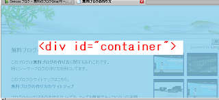
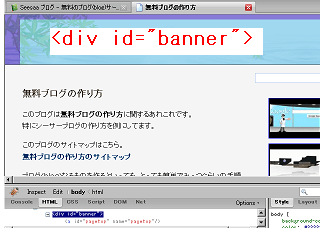
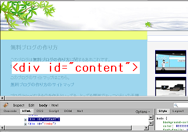
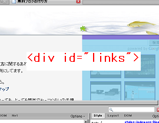
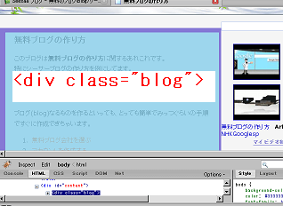
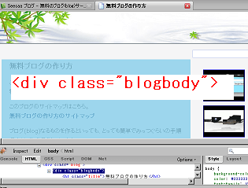
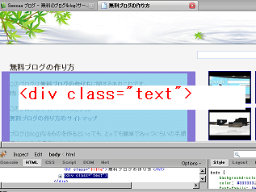

シーサーブログＣＳＳと Firebug
ファイアーフォックス３が出てきたんでアドオンをレビューしようって思います。ブログの作成に役立つアドオンをいくつかインストールしてみたのですが、おっ！ていうのがあったりしてなかなかお役立ちです。なかでも、Firebug というのはなかなかのアドオンだなって思います。
シーサーブログのスタイルシートが一目瞭然
シーサーブログのスタイルシートはバナーとかコンテナーとかいろいろありますけど、どこがどう対応しているのかちょっとわからないものです。
そんなときに Firebug を使えば対応するブログのスタイルシートの箇所が色分けされるようで便利なんです。たとえば、対応する箇所にカーソルを合わせるとこんな感じで色分けされます。
container の領域

banner の領域
左下のが Firebug です。紫の部分はマージンやパディング、それに青の部分を加えたのが banner の領域です。
たとえば、このバナーの高さをもっと低くしたいなって思ったら、スタイルシートの banner のところの height の値を小さくするといいと思います。

content の領域

links の領域

blog の領域

blogbody の領域
blog と blogbody は似ていますが、微妙に違うようです。

text の領域

大体こんな感じでちょっとずつちっちゃくなってくようです。
無料ブログによっては links が sidebar になっていたりと名前は違いますが、似たようなもんだと思います。
シーサーブログのどこの箇所の幅を広げるとどう変るかってわかりずらいですが、そんなとき、ファイアーフォックス３の Firebug アドオンを利用すると便利なんじゃないかなって思います。
パディングやマージン設定の箇所もいろわけされるのでわかりやすいのではないかなって思います。
- HTMLと無料ブログ
ＨＴＭＬの知識は無料ブログを作成する場合、それほど必要ないかと思いますが知っておいた方が楽しいです。 というわたしもそれほど詳しくないのですが、ＨＴＭＬっていうのはブラウザが画面でページを表示する際... - Firefox３アドオンのSEO for firefox
ファイアーフォックスのなかでも人気のアドオンといえば、SEO for firefoxではないかなと思います。 無料ブログ作成の際に何かと気になるnofollowリンクを設置する際にはファイアーフォッ... - リンクタグの作り方
ブログでリンクをしようと思ったとき、リンクタグの作り方はけっこう覚えておいた方がいいと思います。 例えば、あなたのブログからわたしのブログへリンクをはる方法を考えてみましょう！ リンクしたいときは... - ブログ右サイドバーが下にずれるの修正方法
ブログの右サイドバーはときどき下の方へと移動してしまい、レイアウトがくずれちゃっていることも多いと思うんですが、この原因にはいろいろな要因があると思うんで修正方法も難しいものだなと思います。 - CSSで初心者簡単ブログカスタマイズ方法
初めてブログを作る際は文字の大きさや行間などを自分好みにしようと思っても、どこをどう変更していいものやらさっぱりなんですが、スタイルシートの CSS の部分をブログカスタマイズするといいようなんです。...